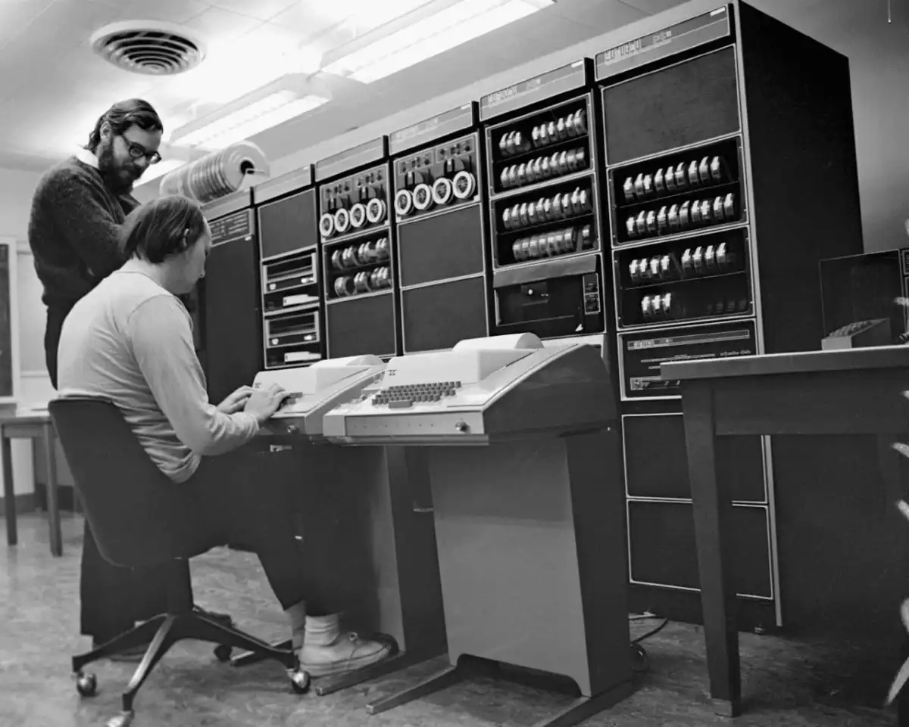
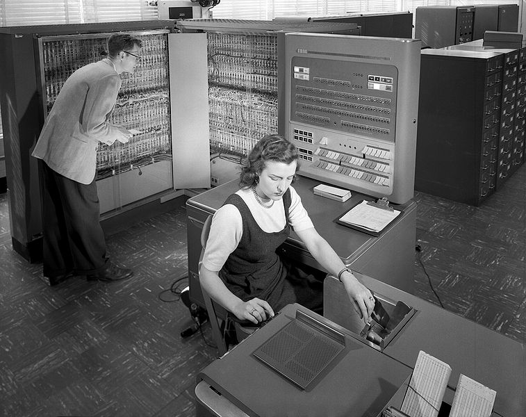

EL PRINCIPIO DE LA HISTORIA DE LA PROGRAMACIÓN
El primer lenguaje de programación fue un algoritmo creado por Ada Lovelace en 1883. Ada Lovelace creó este algoritmo para el motor analítico de Charles Babbage. El propósito de este algoritmo era calcular los números de Bernoulli. En 1936, por primera vez, los códigos informáticos fueron especializados por Alonzo Church y Alan Turing. Church expresó el cálculo lambda de forma formulativa.

LENGUAJE DE ENSAMBLAJE
Los primeros ordenadores modernos (alimentados eléctricamente) fueron creados en los años 40. Estas computadoras estaban limitadas en velocidad y capacidad de memoria. Debido a estas limitaciones, los programadores se vieron obligados a escribir manualmente programas en lenguaje ensamblador. Siendo un lenguaje de programación de bajo nivel, era una tarea difícil programarlo manualmente. Los programadores se dieron cuenta entonces de la necesidad de lenguajes de alto nivel para disminuir el esfuerzo que se requería para escribir los programas en lenguaje ensamblador manualmente.

LOS PRIMEROS LENGUAJES DE PROGRAMACIÓN
FORmulaTRANslation es el lenguaje de programación más antiguo y que continúa en uso. Creada por John Backus en 1957, esta herramienta fue desarrollada para la computación científica de alto nivel, matemáticas y estadísticas. A día de hoy, este lenguaje se sigue usando en la industria automovilística, aeroespacial, gubernamental y la investigación. Por ejemplo, es muy útil para el pronóstico de los servicios meteorológicos. En 1959 se desarrollo Cobol, que está detrás de la mayoría de los sistemas de transacciones de negocio de los procesos de las tarjetas de crédito, ATMs (Modo de Transferencia Asíncrona), telefonía, sistemas hospitalarios, gobierno, sistemas automatizados y señales de tráfico. El desarrollo de Cobol, creado por Grace Murray Hopper, muestra un lenguaje famipar y uniforme para transacciones empresariales. Por ejemplo, lo usan en el servicio postal estadounidense.
En 1964 se creo Basic, que fue diseñado como un lenguaje simppficado para aquellos que no tenían como base fuertes conocimientos técnicos o matemáticos. Entre 1969 y 1973 se crea C, a manos de Dennis Ritchie para los laboratorios Bell Telephone para usarlos en el sistema Unix. Se le llamó «C» porque sus características derivaban de un lenguaje anterior llamado «B». En los laboratorios Bells, Bjarne Stroustrup modificó el lenguaje C al C++, creando lo que muchos consideran el lenguaje de programación más popular que ha existido nunca. Además, ha sido listado en lo alto de los top ten de los lenguajes de programación desde 1986 y archivado en el Hall of Fame en 2003. Hoy en día es usado por Firefox, Office y Adobe PDF Reader. Esto dio el puntapie a que se sigan perfeccionando los lenguajes hasta llegar al os lenguajes de hoy en dia.